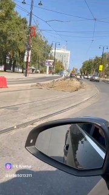

01
Общество и городская среда · событие дня
Центральную улицу Ульяновска вновь частично закрыли - на замену примыканий трамвайных путей
При этом рабочие снимают свежий асфальт у рельсов. В мэрии подчеркивают, что дополнительных денег за это покрытие подрядчику не заплатят: «Чтобы запустить движение транспорта к 1 сентября и не сорвать начало учебного года, на проблемном участке уложили временный асфальт в один слой.…